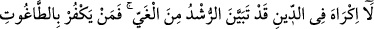
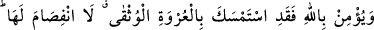

Çünkü Kur’ân, ilimler hazînesidir.
Ancak Kur’ân’ı sıdk ile okumak şarttır. Doğru sözlü olanın yüzü ak, yalancının ise
kara olur. Fecr-i sâdık ile fecr-i kâzib arasındaki farka bakmaz mısın? Fecr-i kâzibden
sonra tekrar karanlık bastığı halde fecr-i sadıktan sonra nasıl aydınlatıcı güneş
doğmaktadır. Nitekim Mesnevî’de gelir:
Senin toprak ve suyun buhârı olan tesbîhin,
Sağlam gönlün bir nefhasıyla cennet kuşu olacaktır.
Hâl, kâlden daha tesirlidir. Bu sebeple, insanların çoğunun, ism-i âzam ile duâ
ettikleri halde, duâlarına icâbet edilmeyen kimselerden olduklarını görürsün. Allah’ım!
Nefsime takvâsını ver ve onu temizle. Çünkü sen tezkiye edenlerin en hayırlısısın.
Âmin.
256. Dinde zorlama yoktur. Artık doğrulukla eğrilik birbirinden ayrılmıştır. O
halde kim tâğutu reddedip Allah’a inanırsa, kopmayan sağlam kulpa yapışmıştır.
Allah işitir ve bilir.
Bir kısım âlimlere göre bu âyet mecûsîler ve ehl-i kitap hakkında inmiştir. Bunlardan
cizye kabûl edilir ve müslüman olmaları için zor kullanılmaz.
Dinde zorlama yoktur. Zira akıllı kimseler, hak dini, hiçbir tereddüd ve şüphe
duymaksızın kabûl ederler. Bu husûsta teklîf ve ilzâma gerek duymazlar. Çünkü hak
dinin delilleri apaçıktır.
“Rüşd”, bütün iyilikleri ve hayırları ihtivâ eden bir lafızdır. Burada “rüşd”den kasıd,
ebedî saâdete kavuşturan îmândır. “Gayy” ise, sonsuz bedbahtlığa sürükleyen küfür
mânâsında kullanılmıştır.
Râğıb Isfahânî: “Gayy’ın cehâlet gibi itikâda ve amele taalluk eden iki yönü vardır.
İlimle cehâletin zevâl bulduğu gibi, rüşd ile de gayy kaybolur gider.” demiştir.
Tağut; Allah’ın dışında insan, cin, şeytan ve benzeri şeylerden kendisine tapılan ve
bizâtihî azgın ve kınanmış olan her şeydir. Bu konuda Îsâ (a.s.)’a gelince onu inkâr,
ibâdete lâyık olduğunu kabûl etmek anlamındaki küfürdür.
Allah’a iman, O’nun birliğini kabûl ve peygamberlerini tasdîk sûretiyle olur. Zira
peygamberleri ve kitapları inkâr, Allah’a tam mânâsıyla îmânı engeller. Allah’a gerçek
mânâda inanmak; emirlerine, yasaklarına ve açık bir şekilde kullarına gönderdiği
şerîatine inanmayı gerektirir.